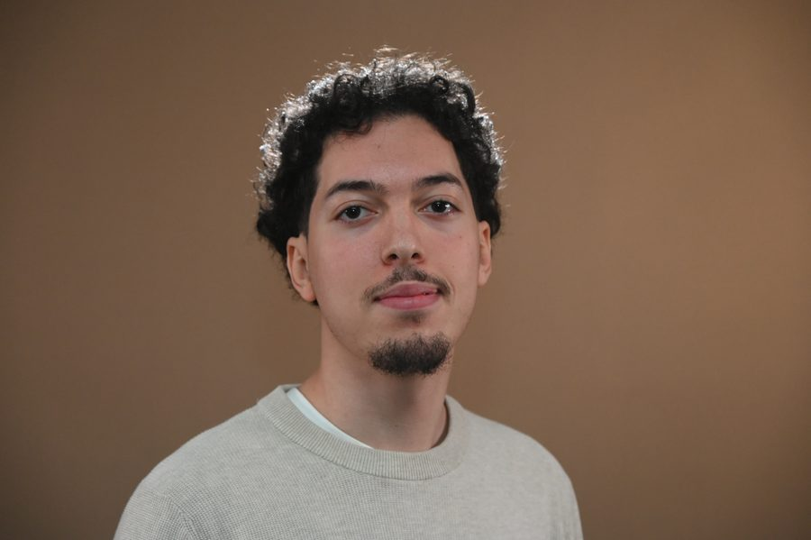
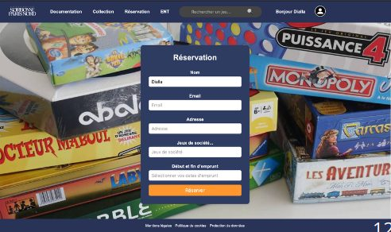
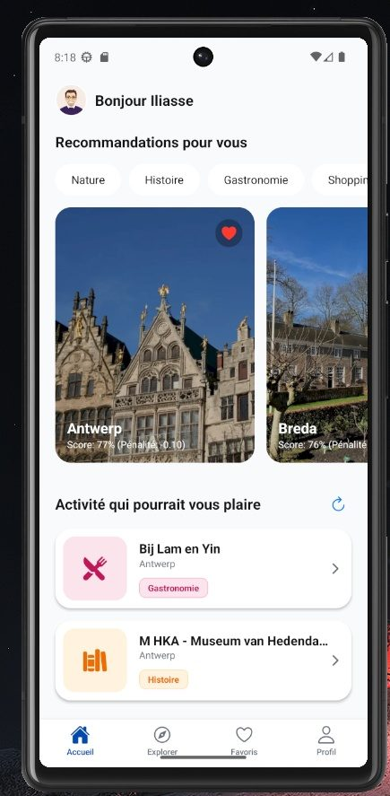
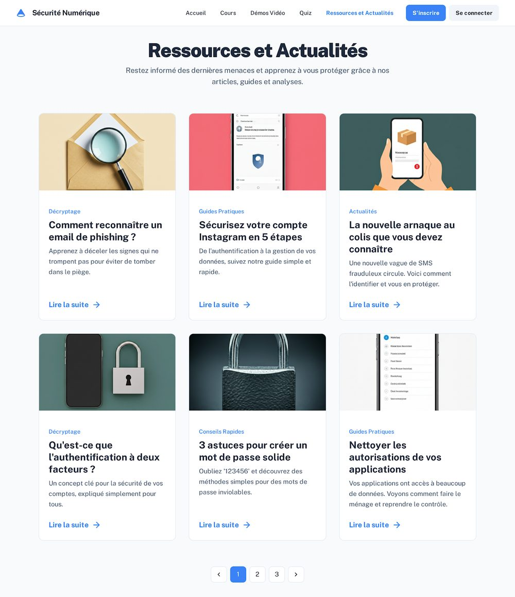
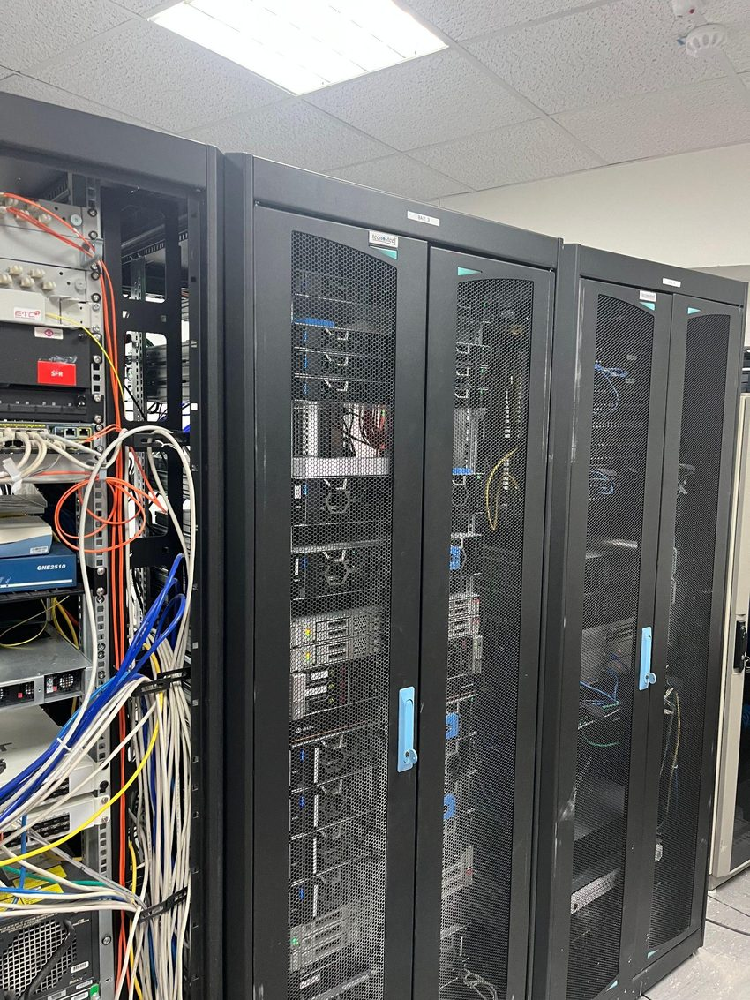

Je suis en troisième année de BUT Informatique, dans le parcours
Réalisation d'applications (conception, développement et validation),
à l'IUT de Villetaneuse, Université Sorbonne Paris Nord.
J'ai été admis en cycle ingénieur en alternance à l'ESIEA pour la
rentrée 2026. Je recherche actuellement une entreprise, sur un rythme
de deux semaines en entreprise et deux semaines à l'école.
Je ne me limite pas à une seule technologie. Ce qui m'intéresse
surtout, c'est de comprendre comment les différentes parties d'un
système fonctionnent ensemble. J'aime apprendre, expérimenter et
passer d'un sujet à un autre.
J'ai tout de même un intérêt particulier pour le matériel et pour ce
qui se rapproche du fonctionnement de la machine. J'aime les
situations où il faut composer avec des contraintes concrètes et
obtenir un résultat avec des ressources limitées. Cet intérêt oriente
ma recherche d'alternance vers le développement backend, les systèmes,
l'infrastructure et la sécurité.

Mon parcours en BUT Informatique
Au départ, je ne connaissais presque rien à l'informatique. Je n'en
avais pas une vision claire, je mélangeais un peu tout dans ma tête, le
dev, la cyber, le hardware. Ce domaine m'attirait surtout pour son lien
avec les nouvelles technologies et son évolution permanente. J'aime
jouer aux jeux vidéo, et j'avais monté mon propre PC, ce qui m'avait
donné un premier intérêt pour le hardware (le matériel informatique).
Je m'intéressais un peu à tout. Je n'étais ni un profil 100 %
scientifique, ni un profil 100 % littéraire. En prenant en compte tous
ces aspects, l'informatique me paraissait le choix le plus logique.
BUT 1
La première année a été difficile, car je partais sans base en
programmation. J'ai toutefois eu la chance d'intégrer un bon groupe
de TD. J'y ai rencontré des personnes qui font aujourd'hui partie de
mes meilleurs amis. Nous nous sommes beaucoup entraidés pour
progresser et valider. Cette expérience m'a vite montré que
l'apprentissage de l'informatique ne repose pas seulement sur le
travail individuel.
BUT 2
La deuxième année a été plus compliquée pour des raisons de santé.
J'ai dû l'interrompre une première fois, puis reprendre après avoir
perdu une partie de mes automatismes. Cette reprise m'a demandé du
temps, mais elle m'a aussi fait progresser. La différence se voit
bien entre notre projet du S3 et sa reprise au S4. Le travail du S3
ne reflétait pas ce dont notre groupe était capable. Nous avons donc
repris presque entièrement le projet au S4, pour améliorer le code,
l'organisation, la base de données, la sécurité et l'usage de Git.
BUT 3
La troisième année a été la plus courte, mais aussi l'une des plus
riches. Je l'ai particulièrement appréciée, car elle m'a permis de
mesurer le chemin parcouru depuis mon arrivée. Elle marque pour moi
la fin d'un premier cycle. Elle a aussi confirmé mon envie de
poursuivre en école d'ingénieur et de continuer à progresser dans un
cadre professionnel.
Entre la première et la troisième année, ce qui a le plus changé, c'est
mon rapport au temps et à l'échec. J'ai compris qu'une année interrompue
ne résume pas un parcours, et que chacun progresse à son rythme.
Ma façon de penser a aussi changé. Je raisonne beaucoup plus en
systèmes qu'avant. Je vois maintenant comment les parties dépendent les
unes des autres, là où je voyais surtout des technologies isolées.
Projets & SAE
Application de gestion de collection de jeux
PHP · SQL · MVC
Application web pour gérer et référencer une grande collection de jeux de société, avec plus de 17 000 références.
Voir les détails
Difficultés : organisation d'équipe insuffisante, gestion de versions bricolée via Google Drive, peu d'expérience du travail en groupe.
Ce que j'en retire : j'ai compris l'importance du versionnement et de l'organisation. C'était ma première vraie application web. Le projet fonctionnait, mais la note a été décevante. C'est ce qui a lancé la refonte du S4.
Mon rôle : le travail était surtout collectif, avec une séparation entre le front-end et le back-end. Les décisions importantes étaient discutées en équipe. Nous avions envisagé CakePHP, mais nous l'avons abandonné faute de le maîtriser dans le temps imparti.
Refonte de l'application de gestion de jeux
PHP · SQL · Git · GitFlow · MVC
Reprise du projet du S3 en repartant presque de zéro, plutôt que d'auditer celui d'un autre groupe.
Voir les détails
Nous avons revu l'architecture, la base de données, la gestion des versions, la sécurité, l'interface et la documentation.
Améliorations : adoption de Git et du GitFlow, architecture MVC, meilleure organisation d'équipe, qualité de code améliorée.
Ce que j'en retire : j'ai progressé sur le travail en équipe, le versionnement et l'architecture. Le projet est devenu bien plus propre et abouti. Surtout, j'ai su rebondir après la déception du S3.

L'interface de réservation après la refonte du S4.
AirAtlas — moteur de recommandation de voyages
React Native · Python · SQLite · MiniLM
Moteur de recommandation de voyages basé sur la recherche sémantique.
Voir les détails
J'ai nettoyé le dataset, généré les embeddings, mis en place la recherche par similarité cosinus et travaillé les performances.
Résultats constatés lors de mes tests : temps d'exécution réduit d'environ 6,1 s à 2 s et consommation mémoire divisée par environ trois.
Mon rôle : je me suis chargé au départ de l'algorithme. Avant MiniLM, je voulais écrire un algorithme vectoriel à la main, en tenant compte de la complexité. Finalement, la majorité a préféré la recherche sémantique de MiniLM. C'est là que j'ai dû ravaler mon ego.

Écran de recommandations d'AirAtlas, affiché avec un profil de démonstration.
SensiNum — Nuit de l'Info
Vue.js · Node.js · Express · GitHub Actions
Application de sensibilisation aux usages et aux risques du numérique, réalisée en équipe de 7.
Voir les détails
Développement full-stack et mise en place d'une CI/CD pendant la nuit du hackathon.
Mon rôle : chef de groupe. J'ai moins touché au code et j'ai surtout supervisé. J'aidais, je donnais mon avis sur le front et le back, et je gardais une vue d'ensemble.

Le site SensiNum, réalisé pendant la Nuit de l'Info.
POC livraison — type Uber Eats (NoSQL)
Python · Redis · MongoDB
Comparaison de plusieurs approches de communication événementielle.
Voir les détails
J'ai comparé Redis Pub/Sub et MongoDB Change Streams, avec une simulation de flux de livraison.
Ce que j'en retire : les architectures distribuées, la communication en temps réel et la comparaison de technologies.
SAE IA — diagrammes de Voronoï
Développement classique vs assisté par IA
Comparaison entre développement classique et développement assisté par IA.
Voir les détails
On a d'abord développé sans IA, puis avec IA, puis on a analysé le tout de façon critique.
La SAE du S5 est la plus technique que j'aie faite. On a eu une méthode propre dès le départ et une bonne répartition des rôles, ce qui nous a valu une bonne note, assez rare dans la promo. On a utilisé MiniLM pour la recherche sémantique, et comme l'application tournait en local, les performances étaient un vrai enjeu. Ce qui a fait la différence, je crois, c'est qu'on comprenait vraiment ce qu'on faisait, et qu'on a su le montrer pendant la présentation.
Côté humain, on a dû composer avec des personnalités variées. En BUT 2, notre groupe était sans ego. Là, les caractères étaient plus forts. J'ai appris à accepter une solution collective même quand elle ne correspondait pas à mon idée de départ. Je sais que ça fait partie du métier.
Bilan SAE S6 — IA & introspection
La SAE du S6 était très différente. Elle s'est faite en trois temps. D'abord sans IA, puis uniquement avec l'IA et différents modèles, puis une phase d'introspection. On reliait notre travail à des thèmes imposés comme la responsabilité juridique, l'écologie ou la dette technique.
On a vu que l'IA pouvait avoir des biais. Avec le même prompt de départ, elle donnait parfois des résultats différents, parfois bons, parfois loin de nos attentes. On a aussi remarqué qu'écrire le code soi-même au départ donne quelque chose de plus modeste, mais calibré juste pour nos besoins.
J'ai développé le module PrestaShop marketfactoryquote. Il permet à un client de construire petit à petit une demande de devis pour des produits personnalisables. Le public visé n'est pas toujours à l'aise avec l'informatique. L'enjeu était de récupérer des informations fiables et exploitables par l'atelier, sans modifier le cœur de PrestaShop. J'étais encadré par Stéphane Pachis et j'échangeais avec Adrian et les autres stagiaires.
J'ai transformé un simple formulaire en un vrai tunnel guidé. Le client s'identifie, avec un pré-remplissage OAuth Google et une autocomplétion d'adresse. Il choisit et personnalise ses produits, couleurs, tailles, quantités, logos et marquage, avec un aperçu. Il termine par un récapitulatif et une soumission, puis la demande est traitée dans le back-office. Le module est organisé en couches, des contrôleurs jusqu'aux templates, en passant par les services, les repositories et les validateurs.
Mes réalisations les plus solides sont les écritures SQL rendues atomiques, une gestion sécurisée des uploads, une connexion OAuth Google sécurisée et le diagnostic d'une erreur 404 Apache. Ma difficulté la plus marquante a été la perte du state OAuth après redirection. Je l'ai réglée avec des cookies dédiés et une vérification stricte du state.
Détails techniques
Écritures SQL rendues atomiques (transactions, COMMIT/ROLLBACK) pour éviter les états incohérents.
Sécurité des uploads : types MIME réels (PNG/JPEG/WebP, SVG refusé), noms aléatoires, stockage temporaire puis définitif, nettoyage des abandons par cron.
OAuth Google sécurisé : vérification du state avec hash_equals, cookies dédiés, aucun token ni secret journalisé.
Données hétérogènes : déclinaisons PrestaShop, lecture seule du cache TopTex, repli sur la description, sans dépendance forte entre modules.
Passage répété au PrestaShop Validator et traitement d'un risque XSS (échappement du contenu marqué nofilter).
Diagnostic d'une 404 Apache sur les URL simplifiées, en isolant la chaîne Apache, .htaccess, Dispatcher PrestaShop puis module.
Autres difficultés : environnement Ubuntu différent du reste de l'équipe, version et base PrestaShop incohérentes au départ, double préfixe SQL ps_ps_, et des produits sans données structurées exploitables.
J'ai surtout découvert le travail sur un projet professionnel déjà existant. J'ai appris la règle de base, ne pas toucher au cœur du framework. Je me suis inspiré du code d'un autre développeur, le module independentshop d'Adrian. J'échangeais souvent avec l'équipe, je versionnais avec Git et je documentais mes problèmes et mes solutions au quotidien.
Ce stage m'a appris qu'une fonctionnalité peut sembler marcher tout en restant fragile. Une simple modification locale pouvait casser une redirection, un cookie, une étape du tunnel, le récapitulatif, un enregistrement en base ou un fichier lié à une demande. J'ai appris à prendre plus de recul avant de modifier le code. Je cherchais d'abord à comprendre le parcours complet des données. Je me suis aussi appuyé davantage sur les logs, les vérifications SQL, le Validator, les sauvegardes, Git et les tests manuels. Ma principale limite, c'est le manque de tests automatisés. La plupart de mes vérifications étaient manuelles.
Une vision du métier — ce que m'a transmis mon maître de stage
Mon maître de stage, Stéphane Pachis, défend un point de vue professionnel qui m'a marqué. Pour lui, le métier de développeur va beaucoup évoluer avec l'IA, et il vaut mieux apprendre à raisonner comme un architecte logiciel que comme un simple exécutant. L'IA devient un outil puissant, à condition de savoir la guider et corriger ses erreurs. Ce que j'en retiens, c'est qu'il faut une base technique solide pour piloter ces outils. Les profils qui comprennent mal l'architecture globale risquent davantage de subir les outils d'IA que de les piloter.
Technicien système, réseau & support — Mairie de Pantin
Stage BUT 2 · Direction du Numérique · été 2025 (8 semaines)
Active Directory · Cisco / VLAN · Réseau · Cybersécurité · Linux
J'ai fait ce stage à la Direction du Numérique de la mairie de Pantin, qui joue le rôle de DSI. J'étais sous la responsabilité de mon tuteur Marc Le Moal, dans une équipe aux profils variés, des techniciens aux administrateurs systèmes en passant par des experts en cybersécurité.
J'ai préparé et déployé des postes, avec le choix du VLAN et du domaine et l'intégration dans l'Active Directory. J'ai configuré un switch Cisco en autonomie, au câble console avec MobaXterm, en adaptant une configuration à un site. J'ai suivi des GPO. J'ai aussi débloqué un poste figé grâce à un script batch qui réinitialise Windows Update. Par curiosité, j'ai ensuite essayé de le retraduire en Python.
J'ai visité la salle serveurs et je suis intervenu sur des baies locales. J'ai fait du diagnostic réseau au Fluke LinkRunner. J'ai découvert des notions concrètes comme la DMZ avec des firewalls récents, le honeypot, le bannissement matériel par HWID ou le PoE. J'ai aussi vécu un cas réel de messagerie piratée. Ça m'a montré les limites du filtrage technique et l'importance de former les utilisateurs.
Tout n'a pas été simple. Certaines tâches étaient répétitives. Je n'avais pas un accès direct à l'outil de tickets GLPI. J'ai aussi vu le décalage entre la théorie et la pratique, par exemple le modèle TCP/IP bien plus utilisé que l'OSI. Dans les périodes calmes, l'autonomie était parfois difficile à gérer. Je compensais en proposant mon aide et en lançant mes propres mini-projets.
J'ai gagné en rigueur et en méthode sur des tâches en apparence simples. J'ai compris l'importance de bien communiquer avec des personnes non spécialistes. J'ai aussi découvert que la cybersécurité me passionne autant que l'IA, au point d'imaginer un parcours hybride et des opportunités à l'étranger.

La salle serveurs de la mairie de Pantin.
Auto-évaluation — 3 compétences (niveau 3)
Démonstration du niveau 3 de trois compétences du BUT Informatique (parcours Réalisation d'applications), reliées à des projets concrets.
Compétence
Niveau
Preuves / Réalisations
Auto-évaluation
Difficultés & progression
Réaliser Adapter des applications sur un ensemble de supports
Niveau 3
Refonte S4, faire évoluer une appli existante en MVC (AC31.02) · AirAtlas, appli mobile React Native (AC31.01) · module PrestaShop chez Market Factory (AC31.03)
C'est la compétence où j'ai le plus progressé, surtout entre le S3 et le S4. Je ne considère plus qu'un code est fini juste parce qu'il fonctionne.
Difficulté : arriver dans un code que je n'ai pas écrit, comme chez Market Factory. Objectif : structurer mon code dès le début et avancer par versions qui fonctionnent.
Optimiser Analyser et optimiser des applications
Niveau 3
AirAtlas, optimisation mesurée par des tests, ≈ 6,1 s → 2 s et mémoire ÷3 (AC32.01 / AC32.03) · POC NoSQL, comparaison Redis/MongoDB
Je sais mesurer puis améliorer les performances d'une application sous contrainte, et justifier mes choix. Je dois encore m'outiller sur le profilage.
Difficulté : la latence de la recherche sémantique et un démarrage lourd. Objectif : chiffrer mes choix par des tests plutôt que par un ressenti, comme on me l'a justement reproché sur le POC.
Collaborer Manager une équipe informatique
Niveau 3
SensiNum, chef de groupe et vue d'ensemble (AC36.04) · AirAtlas, travail par branches et Pull Requests · veille techno partagée (AC36.01)
Comme chef de groupe à la Nuit de l'Info, j'ai réparti les rôles et gardé une vue d'ensemble. Sur AirAtlas, on réglait les conflits d'intégration ensemble, en partage d'écran.
Difficulté : composer avec des personnalités fortes. J'ai appris à accepter une décision collective même quand elle différait de mon idée. Objectif : m'affirmer davantage sans rabaisser mon avis.
AC = apprentissage critique du référentiel BUT Informatique.
Réflexions personnelles
Ce que j'ai découvert de moi-même
Bizarrement, j'ai besoin de me mettre en difficulté pour donner le meilleur de moi-même. Je peux être très méthodique et organisé. Parfois, c'est l'inverse. Il m'arrive de trop réfléchir dans ma tête et de ne m'y mettre qu'à la dernière minute.
Je devrais sans doute être un peu plus spontané et sûr de moi. Je dois arrêter d'attendre que tout soit parfait, parce que rien ne l'est au départ. Il m'arrive aussi de trop écouter l'avis des autres et de rabaisser le mien. Malgré ça, je reste quelqu'un d'ouvert et de sociable.
Ce dont je suis le plus fier
La Nuit de l'Info (SensiNum). Ce n'est pas mon projet le plus fort techniquement. Mais sur le plan humain, l'émotion et le dépassement de soi, c'est celui qui m'a vraiment fait réaliser à quel point j'aime l'informatique.
La reprise du projet de 2ᵉ année (S3 vers S4). Malgré une mauvaise note au S3, on a choisi de reprendre notre propre projet plutôt qu'en auditer un autre. On a amélioré notre méthode. On est passés de Google Drive à Git, et on a mis en place le GitFlow, qu'un camarade, Dalla, nous a appris. Les deux mois de stage entre les deux semestres nous ont aussi permis de mûrir tout ça. Au final, on a eu une bien meilleure note.
On est parfois poussé dans nos retranchements. Mais on n'abandonne pas pour autant. Il y a presque toujours une solution, et elle est souvent collective.
Poursuite d'études & objectifs
Poursuite d'études — cycle ingénieur à l'ESIEA
Continuer mes études me semble naturel. Le développement n'est pas une fin en soi. Personnellement, je pense que le métier de développeur tel qu'il existait va beaucoup changer avec l'IA.
Ce qui m'attire dans le cycle ingénieur, c'est d'apprendre par la pratique des choses variées, comme les mathématiques, le réseau ou l'électronique. Je veux aussi garder ouvertes, jusqu'en deuxième année, les portes du software engineering, de la cybersécurité et du machine learning. Je veux prendre de l'expérience dans ces domaines pour savoir ce que je veux vraiment faire. Je veux me construire un socle solide qui me garde flexible tout au long de ma carrière.
Je veux un métier qui a du sens pour moi, pas quelque chose qui m'ennuie. Être enfermé dans une case ne me ressemble pas. Le pentesting seul, non. La gouvernance non plus. Côté ML, le ML pur et répétitif, sans réfléchir aux besoins ni adapter l'échelle, ne m'intéresse pas. Ce qui me motive, c'est la contrainte matérielle, l'optimisation, le hardware et le fait de penser en systèmes. J'ai aussi une conscience écologique sur ces sujets.
Ce choix prolonge mon travail en PPP. Je me connais. Mes points forts sont plutôt les mathématiques, l'anglais et l'expression française que le développement web pur. Les matières liées au web ne me passionnent pas, et ça se voit dans mes notes. Je l'assume. Elles ont quand même élargi mes connaissances et m'ont laissé des compétences transversales utiles. J'ai donc visé des écoles d'ingénieur généralistes, qui ne m'enferment pas dans une spécialité. Je veux pouvoir explorer, et pourquoi pas enseigner un jour. C'est ce qui m'a mené à l'ESIEA.
Objectifs court / moyen / long terme
Court terme : trouver mon alternance, au rythme deux semaines en entreprise et deux à l'école, et réussir mon entrée en cycle ingénieur. Au début, je veux surtout prendre de l'expérience et créer mon réseau, donc je ne peux pas être trop sélectif.
Moyen terme : explorer le software engineering, la cybersécurité et le ML, et garder mes options ouvertes jusqu'en deuxième année avant de choisir une direction.
Long terme : exercer un métier qui a du sens et qui reste stimulant. C'est pour ça que le pentesting seul, la gouvernance ou le ML répétitif ne me conviennent pas. Je me vois plutôt autour du système, de l'optimisation et du hardware. Pour moi, l'équilibre de vie compte beaucoup. Je travaille pour vivre, je ne vis pas pour travailler. J'aimerais pouvoir faire du télétravail, parfois depuis l'étranger, et pourquoi pas mêler salariat, freelance et enseignement, éventuellement en IUT.
Passeport culturel
Ouverture à l'international
Je regarde toutes mes séries et mes films en VO. Ça m'aide à me familiariser avec l'anglais, ses accents et ses niveaux de langue. J'ai passé le TOEIC cet été et j'ai eu 785. Je n'en suis pas pleinement satisfait. J'ai l'impression d'avoir un peu régressé sur le format depuis mes derniers cours, il y a six mois, même si je comprends toujours aussi bien la langue. Certaines écoles d'ingénieur demandent jusqu'à 850, donc je continue à travailler dessus. Je sais aussi qu'il existe des échanges. Des amis de l'ESIEA sont partis au Canada ou en Asie.
Veille informationnelle & technologique
Je consomme beaucoup de contenu en anglais sur les réseaux sociaux pour ma veille. C'est presque indispensable en informatique. C'est un point sur lequel les enseignants de l'IUT ont beaucoup insisté.
Sorties pédagogiques
J'ai beaucoup aimé les sorties faites en cours de communication et de PPP. Celle qui m'a le plus parlé, c'est la visite du Musée des Arts et Métiers, en lien avec le CNAM. J'ai aussi apprécié l'exposition « Le monde selon l'IA » au Jeu de Paume. Elle donnait d'autres points de vue que celui d'un informaticien, notamment ceux d'artistes.
Centres d'intérêt
J'aime le hardware et la culture en général. J'ai de la curiosité pour tout ce que je ne comprends pas encore. J'aime beaucoup l'histoire et la géopolitique. J'aime aussi voyager, autant pour de belles architectures que pour la montagne, la plaine ou la mer.
Projets personnels
Watcher d'offres d'alternance
En cours
Un outil qui surveille tout seul les offres d'alternance. Il est directement lié à ma recherche actuelle.
Jeu de révision des verbes irréguliers
Non terminé
Un petit jeu que j'ai commencé pour aider mon petit frère à réviser ses verbes irréguliers.
Suivi de candidatures
En réflexion
Une application pour suivre mes candidatures autrement qu'avec un fichier Excel, avec de la CI/CD. Je pense la relier au watcher d'offres.